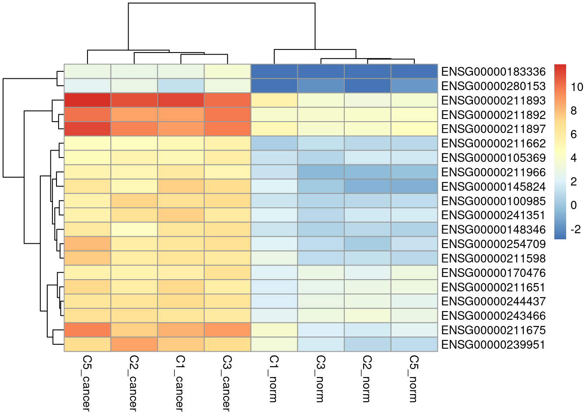

Last updated: 2024-10-31
Checks: 7 0
Knit directory: muse/
This reproducible R Markdown analysis was created with workflowr (version 1.7.1). The Checks tab describes the reproducibility checks that were applied when the results were created. The Past versions tab lists the development history.
Great! Since the R Markdown file has been committed to the Git repository, you know the exact version of the code that produced these results.
Great job! The global environment was empty. Objects defined in the global environment can affect the analysis in your R Markdown file in unknown ways. For reproduciblity it’s best to always run the code in an empty environment.
The command set.seed(20200712) was run prior to running
the code in the R Markdown file. Setting a seed ensures that any results
that rely on randomness, e.g. subsampling or permutations, are
reproducible.
Great job! Recording the operating system, R version, and package versions is critical for reproducibility.
Nice! There were no cached chunks for this analysis, so you can be confident that you successfully produced the results during this run.
Great job! Using relative paths to the files within your workflowr project makes it easier to run your code on other machines.
Great! You are using Git for version control. Tracking code development and connecting the code version to the results is critical for reproducibility.
The results in this page were generated with repository version 04948c5. See the Past versions tab to see a history of the changes made to the R Markdown and HTML files.
Note that you need to be careful to ensure that all relevant files for
the analysis have been committed to Git prior to generating the results
(you can use wflow_publish or
wflow_git_commit). workflowr only checks the R Markdown
file, but you know if there are other scripts or data files that it
depends on. Below is the status of the Git repository when the results
were generated:
Ignored files:
Ignored: .Rhistory
Ignored: .Rproj.user/
Ignored: data/pbmc3k.csv
Ignored: data/pbmc3k.csv.gz
Ignored: data/pbmc3k/
Ignored: r_packages_4.4.0/
Note that any generated files, e.g. HTML, png, CSS, etc., are not included in this status report because it is ok for generated content to have uncommitted changes.
These are the previous versions of the repository in which changes were
made to the R Markdown (analysis/edger_de.Rmd) and HTML
(docs/edger_de.html) files. If you’ve configured a remote
Git repository (see ?wflow_git_remote), click on the
hyperlinks in the table below to view the files as they were in that
past version.
| File | Version | Author | Date | Message |
|---|---|---|---|---|
| Rmd | 04948c5 | Dave Tang | 2024-10-31 | Export edgeR results |
| html | cfbb929 | Dave Tang | 2024-10-31 | Build site. |
| Rmd | 92b951c | Dave Tang | 2024-10-31 | Export edgeR results |
| html | 6aa4e2d | Dave Tang | 2024-10-22 | Build site. |
| Rmd | dda9d85 | Dave Tang | 2024-10-22 | Visualise DEGs |
| html | 6625ffc | Dave Tang | 2024-10-22 | Build site. |
| Rmd | 3661a2e | Dave Tang | 2024-10-22 | Additional sample |
| html | c9037d1 | Dave Tang | 2024-10-22 | Build site. |
| Rmd | f7369ce | Dave Tang | 2024-10-22 | Differential gene expression analysis using edgeR |
edgeR carries out:
Differential expression analysis of RNA-seq expression profiles with biological replication. Implements a range of statistical methodology based on the negative binomial distributions, including empirical Bayes estimation, exact tests, generalized linear models and quasi-likelihood tests. As well as RNA-seq, it be applied to differential signal analysis of other types of genomic data that produce read counts, including ChIP-seq, ATAC-seq, Bisulfite-seq, SAGE and CAGE.
Install using BiocManager::install().
if (!require("BiocManager", quietly = TRUE))
install.packages("BiocManager")
BiocManager::install("edgeR")Use data from An example RNA-seq count table using nf-core/rnaseq.
my_url <- 'https://zenodo.org/records/13970886/files/rsem.merged.gene_counts.tsv?download=1'
my_file <- 'rsem.merged.gene_counts.tsv'
if(file.exists(my_file) == FALSE){
download.file(url = my_url, destfile = my_file)
}
gene_counts <- read_tsv("rsem.merged.gene_counts.tsv", show_col_types = FALSE)
head(gene_counts)# A tibble: 6 × 10
gene_id `transcript_id(s)` ERR160122 ERR160123 ERR160124 ERR164473 ERR164550
<chr> <chr> <dbl> <dbl> <dbl> <dbl> <dbl>
1 ENSG0000… ENST00000373020,E… 2 6 5 374 1637
2 ENSG0000… ENST00000373031,E… 19 40 28 0 1
3 ENSG0000… ENST00000371582,E… 268. 274. 429. 489 637
4 ENSG0000… ENST00000367770,E… 360. 449. 566. 363. 606.
5 ENSG0000… ENST00000286031,E… 156. 185. 265. 85.4 312.
6 ENSG0000… ENST00000374003,E… 24 23 40 1181 423
# ℹ 3 more variables: ERR164551 <dbl>, ERR164552 <dbl>, ERR164554 <dbl>Metadata.
tibble::tribble(
~sample, ~run_id, ~group,
"C2_norm", "ERR160122", "normal",
"C3_norm", "ERR160123", "normal",
"C5_norm", "ERR160124", "normal",
"C1_norm", "ERR164473", "normal",
"C1_cancer", "ERR164550", "cancer",
"C2_cancer", "ERR164551", "cancer",
"C3_cancer", "ERR164552", "cancer",
"C5_cancer", "ERR164554", "cancer"
) -> my_metadata
my_metadata$group <- factor(my_metadata$group, levels = c('normal', 'cancer'))The input to edgeR is the DGEList object.
The required inputs for creating a DGEList object is the
count table and a grouping factor.
gene_counts |>
dplyr::select(starts_with("ERR")) |>
mutate(across(everything(), as.integer)) |>
as.matrix() -> gene_counts_mat
row.names(gene_counts_mat) <- gene_counts$gene_id
idx <- match(colnames(gene_counts_mat), my_metadata$run_id)
colnames(gene_counts_mat) <- my_metadata$sample[idx]
y <- DGEList(
counts = gene_counts_mat,
group = my_metadata$group[idx]
)
yAn object of class "DGEList"
$counts
C2_norm C3_norm C5_norm C1_norm C1_cancer C2_cancer C3_cancer
ENSG00000000003 2 6 5 374 1637 650 1015
ENSG00000000005 19 40 28 0 1 0 0
ENSG00000000419 268 273 428 489 637 879 1157
ENSG00000000457 360 449 566 362 605 708 632
ENSG00000000460 155 184 264 85 312 239 147
C5_cancer
ENSG00000000003 562
ENSG00000000005 0
ENSG00000000419 729
ENSG00000000457 478
ENSG00000000460 156
63135 more rows ...
$samples
group lib.size norm.factors
C2_norm normal 4441588 1
C3_norm normal 5349291 1
C5_norm normal 7613422 1
C1_norm normal 15972904 1
C1_cancer cancer 22329493 1
C2_cancer cancer 29928921 1
C3_cancer cancer 24891206 1
C5_cancer cancer 23703606 1Remove genes that are lowly expressed.
keep <- rowSums(cpm(y) > 0.5) >= 2
y <- y[keep, , keep.lib.sizes=FALSE]
yAn object of class "DGEList"
$counts
C2_norm C3_norm C5_norm C1_norm C1_cancer C2_cancer C3_cancer
ENSG00000000003 2 6 5 374 1637 650 1015
ENSG00000000005 19 40 28 0 1 0 0
ENSG00000000419 268 273 428 489 637 879 1157
ENSG00000000457 360 449 566 362 605 708 632
ENSG00000000460 155 184 264 85 312 239 147
C5_cancer
ENSG00000000003 562
ENSG00000000005 0
ENSG00000000419 729
ENSG00000000457 478
ENSG00000000460 156
37419 more rows ...
$samples
group lib.size norm.factors
C2_norm normal 4431282 1
C3_norm normal 5337400 1
C5_norm normal 7594512 1
C1_norm normal 15964680 1
C1_cancer cancer 22317658 1
C2_cancer cancer 29912740 1
C3_cancer cancer 24876336 1
C5_cancer cancer 23693355 1The
normLibSizes()function normalizes the library sizes in such a way to minimize the log-fold changes between the samples for most genes. The default method for computing these scale factors uses a trimmed mean of M-values (TMM) between each pair of samples. We call the product of the original library size and the scaling factor the effective library size, i.e., the normalized library size. The effective library size replaces the original library size in all downstream analyses
y <- normLibSizes(y)
yAn object of class "DGEList"
$counts
C2_norm C3_norm C5_norm C1_norm C1_cancer C2_cancer C3_cancer
ENSG00000000003 2 6 5 374 1637 650 1015
ENSG00000000005 19 40 28 0 1 0 0
ENSG00000000419 268 273 428 489 637 879 1157
ENSG00000000457 360 449 566 362 605 708 632
ENSG00000000460 155 184 264 85 312 239 147
C5_cancer
ENSG00000000003 562
ENSG00000000005 0
ENSG00000000419 729
ENSG00000000457 478
ENSG00000000460 156
37419 more rows ...
$samples
group lib.size norm.factors
C2_norm normal 4431282 1.4420477
C3_norm normal 5337400 1.4377942
C5_norm normal 7594512 1.3836402
C1_norm normal 15964680 0.8389637
C1_cancer cancer 22317658 0.8199077
C2_cancer cancer 29912740 0.7972139
C3_cancer cancer 24876336 0.8151023
C5_cancer cancer 23693355 0.7798397plotMDS(y, plot = FALSE)$eigen.vectors[, 1:2] |>
as.data.frame() |>
cbind(my_metadata) |>
dplyr::rename(`Eigenvector 1` = V1, `Eigenvector 2` = V2) |>
ggplot(aes(`Eigenvector 1`, `Eigenvector 2`, colour = group, label = sample)) +
geom_point(size = 2) +
geom_text_repel(show.legend = FALSE) +
theme_minimal() +
ggtitle("MDS plot")
design <- model.matrix(~y$samples$group)
y <- estimateDisp(y, design, robust=TRUE)
fit <- glmQLFit(y, design, robust=TRUE)
res <- glmQLFTest(fit)
topTags(res)Coefficient: y$samples$groupcancer
logFC logCPM F PValue FDR
ENSG00000289381 -7.411609 2.3413727 156.14405 3.485881e-09 0.0001304556
ENSG00000100985 5.744629 5.7690594 110.89086 1.418804e-06 0.0058527061
ENSG00000275332 -7.648126 2.5721238 59.27705 1.721074e-06 0.0058527061
ENSG00000220695 -9.132437 4.0374574 58.73122 1.982088e-06 0.0058527061
ENSG00000256422 -5.529837 0.5541825 54.99786 2.395813e-06 0.0058527061
ENSG00000151834 -8.035376 3.6441016 61.94292 2.733010e-06 0.0058527061
ENSG00000167910 -8.018047 3.4530411 55.86149 3.928929e-06 0.0058527061
ENSG00000226443 -5.742734 0.9948963 51.37638 4.209874e-06 0.0058527061
ENSG00000250696 -8.580216 3.8092969 52.88815 4.376155e-06 0.0058527061
ENSG00000196778 -8.809149 4.2377739 54.66541 4.439027e-06 0.0058527061CPM.
my_cpms <- cpm(y, prior.count=2, log=TRUE)
head(my_cpms) C2_norm C3_norm C5_norm C1_norm C1_cancer C2_cancer
ENSG00000000003 -1.159752 -0.1258585 -0.7121002 4.810340 6.485360 4.775676
ENSG00000000005 1.635961 2.4187173 1.4850268 -2.893182 -2.401590 -2.893182
ENSG00000000419 5.394869 5.1582110 5.3528004 5.195507 5.127070 5.209251
ENSG00000000457 5.819453 5.8738922 5.7548326 4.763521 5.053005 4.898404
ENSG00000000460 4.608265 4.5916439 4.6586766 2.696179 4.103099 3.344387
ENSG00000000938 1.959920 1.6469490 1.9786359 6.464501 4.539243 7.133878
C3_cancer C5_cancer
ENSG00000000003 5.649383 4.933136
ENSG00000000005 -2.893182 -2.893182
ENSG00000000419 5.837817 5.307028
ENSG00000000457 4.968242 4.700693
ENSG00000000460 2.884458 3.100561
ENSG00000000938 5.947951 5.961622Down-regulated genes with respect to the cancer group.
topTags(res, n = Inf) |>
as.data.frame() |>
dplyr::filter(FDR < 0.01) |>
dplyr::filter(logFC < 0) |>
dplyr::slice_min(order_by = FDR, n = 20, with_ties = FALSE) |>
row.names() -> down_genes
my_cpms[down_genes, ] |>
pheatmap()
Up-regulated genes with respect to the cancer group.
topTags(res, n = Inf) |>
as.data.frame() |>
dplyr::filter(FDR < 0.01) |>
dplyr::filter(logFC > 0) |>
dplyr::slice_min(order_by = FDR, n = 20, with_ties = FALSE) |>
row.names() -> up_genes
my_cpms[up_genes, ] |>
pheatmap()
Results are stored in res.
class(res)[1] "DGELRT"
attr(,"package")
[1] "edgeR"Specifically, in res$table.
head(res$table) logFC logCPM F PValue
ENSG00000000003 2.7275199 4.832838 4.2763383 0.068387013
ENSG00000000005 -7.0023947 0.540980 17.6315738 0.002159975
ENSG00000000419 0.1201226 5.339964 0.1140066 0.743147316
ENSG00000000457 -0.7079087 5.306090 3.3541835 0.099292833
ENSG00000000460 -0.8967285 3.947381 2.6625206 0.136187708
ENSG00000000938 1.5368400 5.597107 1.8649388 0.205160993Add adjusted p-values and export.
res$table |>
dplyr::mutate(adjusted_pvalue = p.adjust(PValue, method = "BH")) |>
tibble::rownames_to_column("ensembl_gene_id") |>
readr::write_csv(file = "data/13970886_edger_res.csv")
sessionInfo()R version 4.4.0 (2024-04-24)
Platform: x86_64-pc-linux-gnu
Running under: Ubuntu 22.04.4 LTS
Matrix products: default
BLAS: /usr/lib/x86_64-linux-gnu/openblas-pthread/libblas.so.3
LAPACK: /usr/lib/x86_64-linux-gnu/openblas-pthread/libopenblasp-r0.3.20.so; LAPACK version 3.10.0
locale:
[1] LC_CTYPE=en_US.UTF-8 LC_NUMERIC=C
[3] LC_TIME=en_US.UTF-8 LC_COLLATE=en_US.UTF-8
[5] LC_MONETARY=en_US.UTF-8 LC_MESSAGES=en_US.UTF-8
[7] LC_PAPER=en_US.UTF-8 LC_NAME=C
[9] LC_ADDRESS=C LC_TELEPHONE=C
[11] LC_MEASUREMENT=en_US.UTF-8 LC_IDENTIFICATION=C
time zone: Etc/UTC
tzcode source: system (glibc)
attached base packages:
[1] stats graphics grDevices utils datasets methods base
other attached packages:
[1] pheatmap_1.0.12 ggrepel_0.9.5 edgeR_4.2.2 limma_3.60.6
[5] lubridate_1.9.3 forcats_1.0.0 stringr_1.5.1 dplyr_1.1.4
[9] purrr_1.0.2 readr_2.1.5 tidyr_1.3.1 tibble_3.2.1
[13] ggplot2_3.5.1 tidyverse_2.0.0 workflowr_1.7.1
loaded via a namespace (and not attached):
[1] gtable_0.3.5 xfun_0.44 bslib_0.7.0 processx_3.8.4
[5] lattice_0.22-6 callr_3.7.6 tzdb_0.4.0 vctrs_0.6.5
[9] tools_4.4.0 ps_1.7.6 generics_0.1.3 parallel_4.4.0
[13] fansi_1.0.6 highr_0.11 pkgconfig_2.0.3 RColorBrewer_1.1-3
[17] lifecycle_1.0.4 farver_2.1.2 compiler_4.4.0 git2r_0.33.0
[21] statmod_1.5.0 munsell_0.5.1 getPass_0.2-4 httpuv_1.6.15
[25] htmltools_0.5.8.1 sass_0.4.9 yaml_2.3.8 crayon_1.5.2
[29] later_1.3.2 pillar_1.9.0 jquerylib_0.1.4 whisker_0.4.1
[33] cachem_1.1.0 tidyselect_1.2.1 locfit_1.5-9.9 digest_0.6.37
[37] stringi_1.8.4 splines_4.4.0 labeling_0.4.3 rprojroot_2.0.4
[41] fastmap_1.2.0 grid_4.4.0 colorspace_2.1-0 cli_3.6.3
[45] magrittr_2.0.3 utf8_1.2.4 withr_3.0.1 scales_1.3.0
[49] promises_1.3.0 bit64_4.0.5 timechange_0.3.0 rmarkdown_2.27
[53] httr_1.4.7 bit_4.0.5 hms_1.1.3 evaluate_0.24.0
[57] knitr_1.47 rlang_1.1.4 Rcpp_1.0.12 glue_1.7.0
[61] rstudioapi_0.16.0 vroom_1.6.5 jsonlite_1.8.8 R6_2.5.1
[65] fs_1.6.4